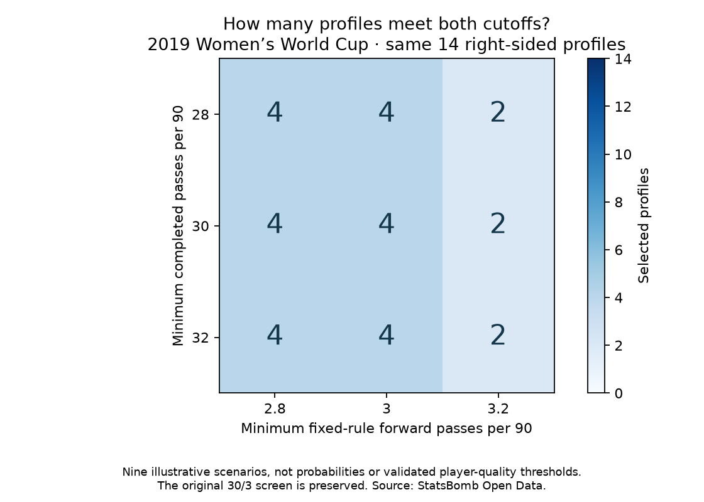

Football analyst training · SQL scouting tools · Lesson 83
Does the shortlist depend on our cutoff?
Course reading: Soccermatics Lesson 3 — Case study: spreadsheet scouting. This sensitivity check is our custom extension.
We used sensitivity analysis earlier when changing corner-phase windows. Now we apply the same idea to the scouting screen: change an assumption and inspect what changes.
The completed assignment
The player data, right-sided group, minimum three starts and fixed forward-pass definition stay the same. We test nine combinations:
Completed-pass floors: 28, 30, 32 per 90 Forward-pass floors: 2.8, 3.0, 3.2 per 90

What changed?
- Bronze and Van Lunteren: selected in all nine tested combinations.
- Lawrence and Shimizu: selected in six; excluded when the forward floor rises to 3.2.
- Passing floors 28–32: no membership change at any of our tested forward floors.
Lawrence records 3.09 fixed-rule forward passes/90 and Shimizu 3.06. Both pass the 3.0 floor and miss 3.2. Their football performances have not changed; our chosen requirement has.
Being selected in nine scenarios does not establish a better player. Six out of nine is not a probability of suitability: it is simply a count of the assumptions we tried. Another grid could give another count.
Practice: a player has 3.09 forward passes/90. Does moving the floor from 3.0 to 3.2 mean her performance got worse?
No. Her observed value stays 3.09. The requirement became stricter. We should inspect the actual value and football context before turning the boundary into a quality judgement.
The original four-profile screen remains unchanged. We have not tested other seasons, match samples, role definitions, minimum starts or alternative forward-pass definitions here. No optimal cutoff or signing decision is established.
Run 83_scouting_screen_sensitivity.py in Spyder. Read the full comparison and scenario protocol. Ask your teacher about any scenario or denominator. The implementation is assisted; independent interpretation remains to demonstrate.